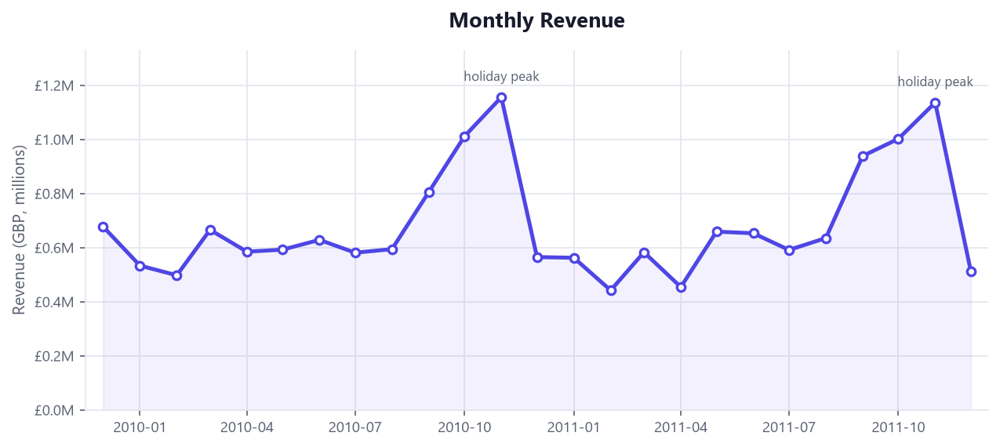
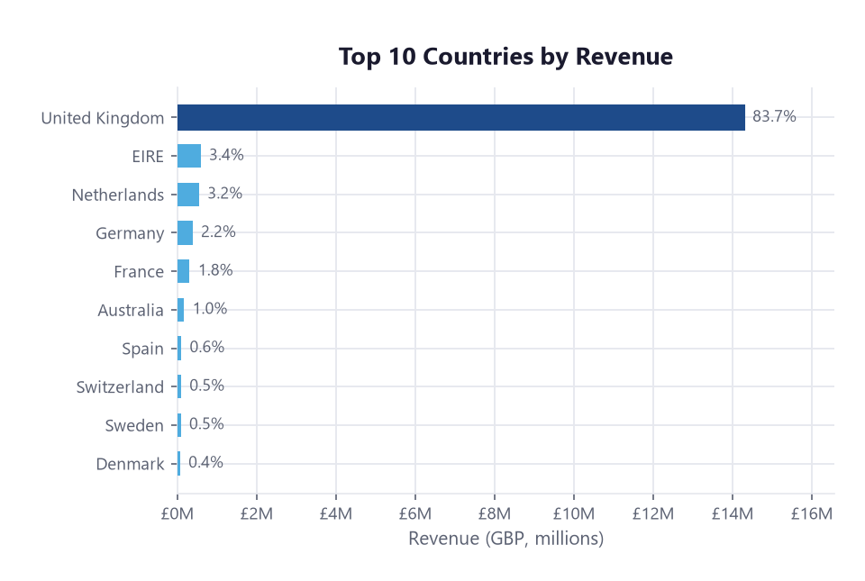
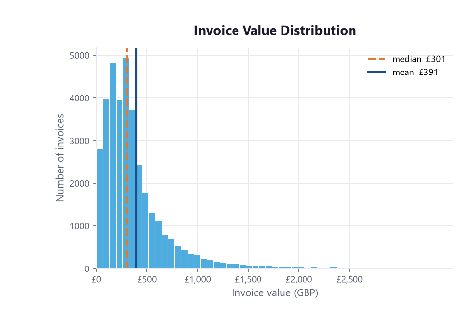
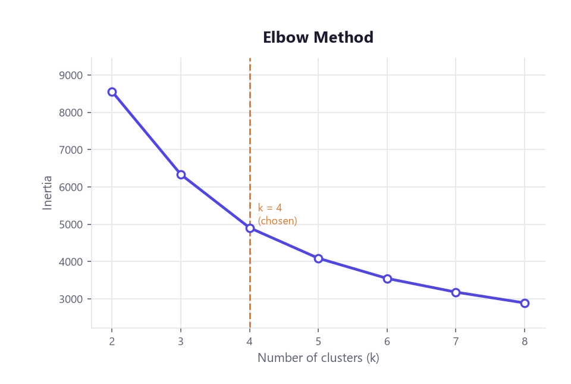
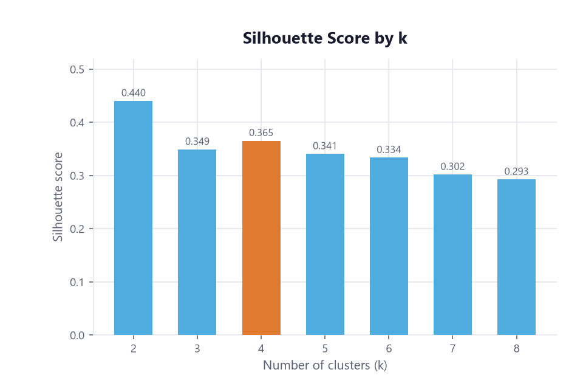
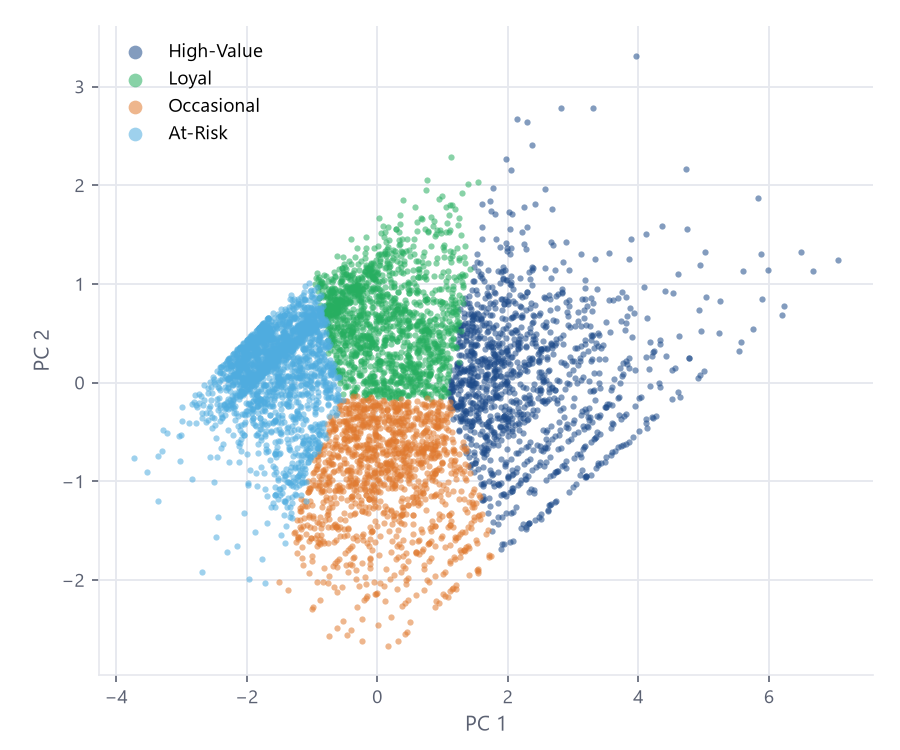
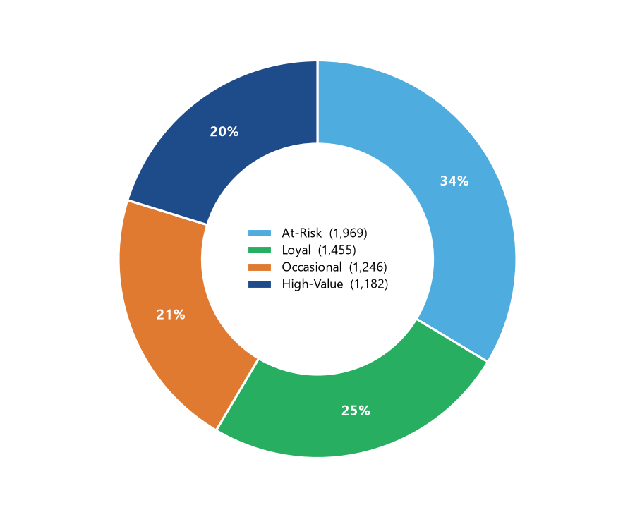
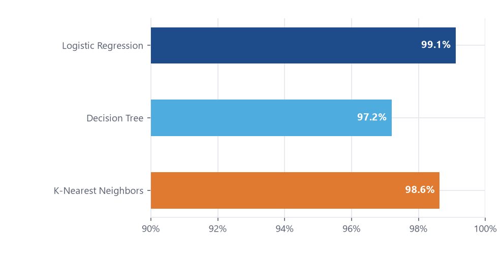
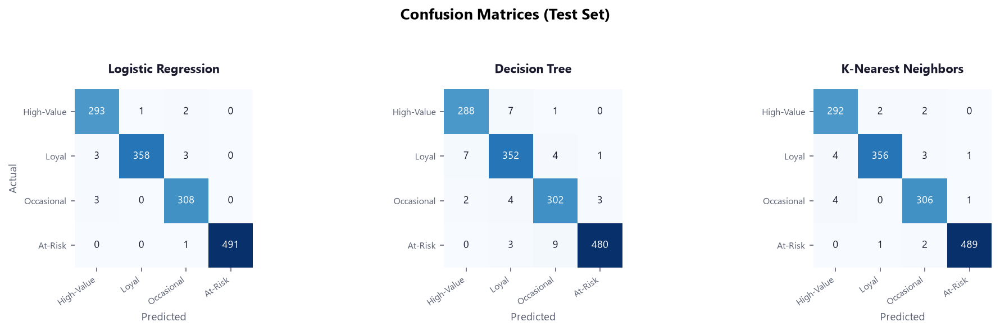

Python · Machine Learning · Customer Analytics
An end-to-end Machine Learning workflow on 1M+ online retail transaction, covering exploratory data analysis, unsupervised model training (clustering), supervised model training and evaluation (classification), and business-facing recommendations.
Stage one performs exploratory data analysis to clean and transform the raw transaction data, handling missing values, duplicates, and outliers to prepare it for feature engineering. Stage two normalizes customer purchase behavior into three engineered features — Recency, Frequency, and Monetary (RFM) — and trains a K-Means clustering model to segment 5,852 customers into four behaviorally distinct groups. Stage three trains and evaluates three supervised classification models — Logistic Regression, Decision Tree, and KNN — to predict customer segment membership from RFM features, enabling new customers to be scored without re-running the clustering model.
Step 1 · EDA
Two annual worksheets were combined into one 1.07M-row transaction log, then run through a sequential cleaning pipeline — each step's effect on the row count logged for transparency — before exploring revenue patterns over time, by geography, and by order size.
| Cleaning step | Rows removed | Rows remaining |
|---|---|---|
| Raw combined dataset (2009–2011) | — | 1,067,371 |
| Cancelled orders (Invoice starts with "C") | 19,494 | 1,047,877 |
| Missing Customer ID | 242,257 | 805,620 |
| Non-positive Price | 71 | 805,549 |
| Duplicate rows | 26,124 | 779,425 |
| Non-product stock codes (postage, fees…) | 2,848 | 776,577 |
Final working set: 776,577 transaction lines · 5,852 unique customers (~73% of raw rows).



Because invoice value is strongly right-skewed — the customer base mixes individual consumers and wholesalers — all three RFM features were log(1 + x) transformed and standardized before modeling — otherwise pound-scale spending would dominate the Euclidean distance used by K-Means and KNN.
Step 2 · Machine Learning
Each customer was reduced to three behavioral features, aggregated from the cleaned transaction log against a snapshot date one day after the final transaction.
snapshot_date = df["InvoiceDate"].max() + pd.Timedelta(days=1)
df["LineValue"] = df["Quantity"] * df["Price"]
rfm = df.groupby("Customer ID").agg(
Recency = ("InvoiceDate", lambda x: (snapshot_date - x.max()).days),
Frequency = ("Invoice", "nunique"), # distinct orders
Monetary = ("LineValue", "sum"), # total spend (£)
)
# Right-skewed -> log1p, then standardize (K-Means & KNN rely on distance)
rfm_scaled = StandardScaler().fit_transform(np.log1p(rfm))
The number of clusters was chosen using the elbow method and silhouette analysis together. The elbow
curve had no sharp bend; k = 4 was a local silhouette maximum and matched the four
business-relevant segments defined in the proposal.


| Segment | Avg. Recency (days) | Avg. Frequency (orders) | Avg. Monetary (£) | Customers |
|---|---|---|---|---|
| High-Value | 27.6 | 19.2 | 10,590 | 1,182 |
| Loyal | 227.4 | 5.1 | 1,978 | 1,455 |
| Occasional | 28.2 | 3.0 | 841 | 1,246 |
| At-Risk | 392.6 | 1.4 | 317 | 1,969 |


Step 3 · Model Training & Test
The cluster labels became a classification target. Three algorithms from distinct modeling families were trained on a stratified 75/25 split — scaler fit on the training set only — then evaluated on a held-out test set and with 5-fold cross-validation.
X = rfm_scaled # same 3 standardized RFM features
y = kmeans.labels_ # segment assigned by K-Means (k=4)
X_train, X_test, y_train, y_test = train_test_split(
X, y, test_size=0.25, stratify=y, random_state=42
)
models = {
"Logistic Regression": LogisticRegression(max_iter=1000),
"Decision Tree": DecisionTreeClassifier(random_state=42),
"K-Nearest Neighbors": KNeighborsClassifier(),
}
for name, clf in models.items():
clf.fit(X_train, y_train)
acc = accuracy_score(y_test, clf.predict(X_test))
cv = cross_val_score(clf, X_train, y_train, cv=5).mean() # 5-fold
print(f"{name:22s} test={acc:.3f} cv={cv:.3f}")
| Model | Accuracy | F1 | CV Acc. |
|---|---|---|---|
| Logistic Regression | 0.991 | 0.990 | 0.990 ± 0.003 |
| Decision Tree | 0.972 | 0.971 | 0.972 ± 0.005 |
| K-Nearest Neighbors | 0.986 | 0.985 | 0.980 ± 0.005 |


Interpreted with caution: because the target labels were derived from the same RFM features fed to the classifiers, near-perfect accuracy is expected by construction — it shows the models faithfully recovered the K-Means boundaries, not that they found new signal. The practical value is a fast, interpretable way to assign new customers to a segment between full re-clustering cycles (e.g. quarterly).
Outcome
Each segment needs a different promotion and advertising strategy. The guiding principle is to spend retention budget where revenue is concentrated and switch to low-cost automation where it is not.